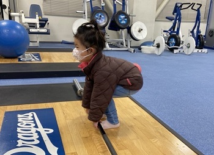

Kitanoの日課

毎日体を動かす
筋トレで汗を流すのはとても楽しいです。
「時間がないなぁ...」そんな日もお昼休みを10分使って筋トレをします
なぜ始めようと思ったのか
心と体は相互に影響します。
ある日、気づきました。「体力が余り過ぎている日は家族とけんかをするな...」
仕事をしていると、知らないうちに心が疲れていることがあるんですよね。
RWも影響しているのか？気軽に雑談して発散できる場もない。
そんなこんなで体は疲れていないのに、心だけ疲れる状況が発生します。
どういうわけか、そういう状況下で家族の喧嘩が増えていたのです
いつでもどこでもできる対策を考えた
そこで、試しに筋トレをやってみることにしました。
体を疲れさせることにしたのです。
体を動かすと、程よい疲労感を感じます。
そうすることで、体と心の疲労が釣り合う関係になりました。
結果どうなかの？
自分でも驚くくらいに喧嘩が減りました！
何か言われても「...うん、それでどうした？」みたいな平常心でいられます。
まとめ
- 人と衝突するときは、心と体の疲労度をチェックしよう
- 心と体の疲労バランスがとれていないときは、筋トレをしよう
- 毎日の小さな習慣を味方につけ、大切な人とよい関係を築こう
筋トレはイヤ！な方はこちらもご参考に。